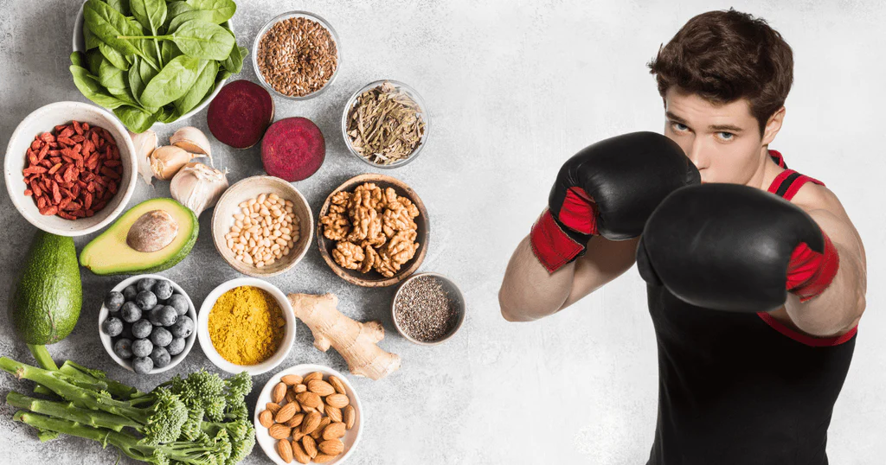

Dieta ideal para un boxeador
La correcta alimentación y nutrición es vital para los deportistas, descubre la dieta ideal para un boxeador.
La nutrición, es responsable del buen o mal rendimiento de un boxeador, pues los deportes de contacto, exigen gran resistencia.
La dieta ideal para un boxeador es muy variada, nada extraordinario, pero sí con un orden riguroso y estricto.
Se deben incluir todos los grupos de alimentos para crear la dieta ideal equilibrada.
¿Quieres ser un boxeador? ¿Ya te iniciaste en la vida del boxeo?
Te contaremos qué comer, en qué momento, con cuánta frecuencia, y en qué cantidades, para mejorar tu rendimiento físico y hasta mental.
Descubre la dieta ideal
- Verduras y hortalizas.
- Pan y pastas integrales, cereales.
- Leche y derivados.
- Tubérculos, legumbres y frutos secos.
- Grasas, aceites y mantequilla.
Formula perfecta de la dieta ideal
Es secreto de esta fórmula está en la simpleza: comer de forma nutritiva, equilibrada, suficiente, y mezclando los diferentes grupos de alimentos.
¿Cuándo comer?

Por las mañanas se requiere glucosa para alimentar al cerebro, dar energía a todo el cuerpo, y acabar con el ayuno, principalmente con carbohidratos y vitaminas.
La segunda comida durante el día es el almuerzo, cerca del mediodía, es para aportar parte importante de las proteínas que se ocuparan durante el día. Éstas deben ser de al menos dos gramos de proteína por kilo de peso.
La comida es la tercera ingesta de alimentos durante el día. La cual se debe comenzar siempre con una ensalada, para aportar las enzimas necesarias para que el cuerpo absorba los nutrientes de los alimentos con proteínas.
Luego de haber entrenado dos o tres horas, llegó el momento de cenar, la cena es a cuarta y última comida del día. Ésta debe ser ligera, especialmente porque ya no se realizará ninguna actividad física, y esa energía se convertirá en tejido adiposo, por no haberse usado.
¿Cuándo comer?
- Desayuno 7:00 u 8:00 horas.
- Almuerzo 11:00 o 12:00 horas.
- Comida 14:00 o 15:00 horas.
- Cena 20:00 o 21:00 horas.
Ejemplo de una dieta ideal
Desayuno
Puedes iniciar el día con jugos o licuados, puedes elegir la combinación que más te guste, dulces o agrios. Incluye naranja, zanahoria, betabel, apio, piña, entre otras.
Así como consumir cereales como avena con frutos secos como pasas, y abundantes plátanos.
La clave está en comer mucha fruta en la mañana, que sea un desayuno abundante. Manzanas pera, guayabas, pera, melón, granola, y miel natural.
Almuerzo
Si para esa hora ya no estás en casa, lleva contigo sándwiches o tortas saludables, hechas por ti. Que los panes sean integrales, con lechuga, jitomate, aguacate, queso y pavo o atún o huevo.
El inicio del día es el mejor momento para ingerir carbohidratos, por la tarde y noche ya no. Crea tus propias combinaciones de alimentos con carbohidratos.
Comida
Antes de la comida, siempre una ensalada. Puede ser de alguna lechuga y hortaliza.
Ejemplo: lechuga orejona, jitomate, cebolla, aguacate, betabel, zanahoria, limón y sal o aceite de oliva. Los aceites son importantes para tener testosterona, estamina, fuerza, energía y vitaminas.
Sopas o cremas: de vegetales frescos.
Ración de carne de pollo, pescado, carne de res o de cerdo.
Cena
Después de 2-3 horas de entrenar, viene una cena ligera. Evita comer pan de dulce, harinas refinadas, papas, refrescos, ni cualquier otro tipo de alimento basura, en ningún momento del día, y especialmente por las noches.
Yogurt, pan tostado integral, una pequeña cantidad de legumbres o semillas. Y un vaso de agua con el jugo de un limón antes de ir a dormir.
Tip: el vaso con agua con jugo de un limón, se puede tomar al ir a dormir, o al despertar antes de desayunar; en ambos casos ayuda a mantener alcalino el cuerpo.
Opcional: comer colaciones entre comidas
Lo mejor es que evites comer entre comidas, resérvate para ingerir solo alimentos nutritivos, nada de comida chatarra empaquetada. Pero si no te puedes resistir a comer entre comidas, puedes recurrir a colaciones saludables como:
- Frutas
- Granos no salados
- Semillas
- Frutos secos